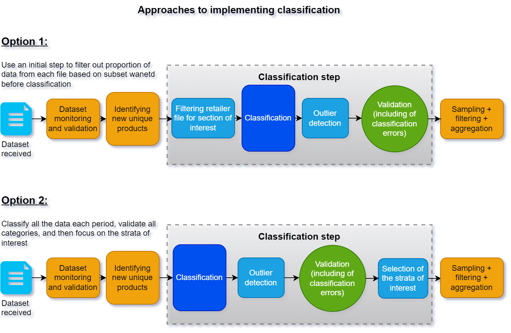

Designing the classification step: operational considerations
This section provides context about where and how the classification step fits into the rest of the pipeline processing alternative data to create elementary price indices, as well as some important considerations and options when setting up the classification process. This article can also be seen as a companion to the pre-conditions to classification section, helping the NSO design the operational process for the individual or blended method that will be chosen.
Page information
| Version | v2 |
| Last updated on | 2025-04-28 |
| Summary of changes | Initial publication |
| Page history | See here |
Pre-classification: identify unique products
As mentioned in the pre-conditions to classification section, the classification step should be done at the unique product level, which significantly reduces the scale and complexity of the task. Two approaches to classification are possible to consider:
- NSOs may choose to do classification at the individual product level at the granularity of an article code (such as GTIN), or
- NSOs may choose to classify a higher granularity record (such as a homogeneous unique product).
Classifying using the second case will reduce the scale of the clasification task, however NSOs may wish to use the predicted product class as input for grouping/linking performed as part of the 'aggregation-across-products' activity (1). It is worth recognizing that misclassification is more likely to impact the latter as product grouping/linking would thus omit products misclassified to other categories.
The classification step is a composition of several sub-steps
Filtering out aspects of a retailer file not necessary
While NSOs approach alternative data with goals of using all the data for price indices, the alternative data received may not fully align with the set of elementary aggregates that will be calculated with this dataset. Specifically:
- There may be aspects of the alternative dataset provided that may not fall into the scope of the CPI or be desirable for production. This could include cases such as the volume of data for the specific strata is just too small to be meaningful and representative. Alternatively, there may be a case where specific aspects of the provided dataset are not of interest or needed for the CPI. (2)
- Where the NSO is following a gradual adoption strategy of this dataset for production, and hence the proportion of the retailer dataset used for production expands over time.
In these cases, it may be useful to select an approach where the data is cleanly stratified to allow the NSO to focus on the proportion of interest. In this case, the NSO has two approaches that can be adopted (see Figure 1 for visual):
- Option 1: The NSO may set up a two pronged ‘classification’ approach, whereby the ‘out-of-scope’ data within each file is first filtered out, and only the ‘in-scope’ data is classified further to the categoires of interest. This approach may be preferred if the filtering can be done in a very robust and stable way, such as with Method 1 or Method 2, and in essence acts as a separate simpler classifier that precedes the main classifier that actually supports production needs.
- Option 2: the NSO may aim to classify all the data in the dataset using one classifier, aiming instead to only use categories that are needed afterwards. This approach may be preferred either if the data does not allow a clean way to filter out data points (say method 1 or 2 cannot be reliably used), or if the in-scope and out-of-scope categories will shift over time (such as due to the NSO following a gradual implementation strategy for the retailer dataset). The latter may be the chosen approach simply because it is simpler to maintain and update one classifier rather than two.
Diagram 1: Approaches to implementing classification in production

More specific consideration of both options can be seen here:
| Option | Pros | Cons |
| Option 1: use a filter stage preceding the main classification stage |
|
|
| Option 2: Using one classification sub-step instead |
|
|
This separation into two conceptual options may be more a theoretical excersise and a mix may be used in practice. For instance, an NSO begins with with the first approach, however find that it is challenging to maintain or that option 1 still does not cleanly 'filter out' all records that are not of interest. In this case, a mix of two options may be maintained for a short time before the NSO concludes that option 2 is operationally simpler to maintain.
The classifier
The classifier sub-step, depending on the method used, applies one of the methods, or blend of them, to classify all new unique products to the taxonomy codes used in production. All products may be used as an input for a price index, or the output of this classification may be a frame for which sampling is done. In either case, as classification often needs to be maintained (see subsequent sub-step), NSOs often aim to develop the classifier in a modular way so as to update it without impacting the later systems. In this sense, the classifier is a ‘product’ that can be evaluated in production using applicable metrics on all newly classified records (i.e. out-of-sample performance), and updated (or retrained if this uses advanced methods such as Method 4).
Validation follows classification
Following the classification method chosen or a blend, NSOs are strongly recommended to perform a validation step (5,7,8). While most commonly utilized with advanced classification methods (methods 3 and 4), this step can be used for all classification methods, such as Method 2 (see the feedback arrow in Diagram 1). In this step, it may be advisable to validate all, or a relevant proportion of the unique records (9). This step is critical to support robust evaluation of the classifier on an out-of-sample dataset, as well as to create additional validated data that can be used to retrain advanced classification models. Indeed, this step is critical within the Machine Learning Operations (MLOps) literature as model retraining is necessary to maintain performance over time (6,9).
Other aspects that may be important to keep in mind
Other steps in the process to create production statistics may be useful to keep in mind as they can support the validation sub-step. For instance, an approach to filter out or flag impactful outliers for validation or for analytical decomposition effects may also be used to flag more critical records that need to be validated in the validation sub-step.
References and footnotes
(1) For instance Hov and Johannessen (2018) made use of the chains' own classification systems to create clusters of homogeneous products. See Hov, K.N. and Johannessen, R. 2018. Using scanner data for sports equipment. Paper presented at the ILO/UNECE meeting of the Group of Experts on Consumer Price Indices. (May 2018). https://unece.org/fileadmin/DAM/stats/documents/ece/ces/ge.22/2018/Norway_-_session_1.pdf
(2) Insert reference with examples… rail fares, new cars in used car dataset, etc…
(3) Read more about how to deal with taxonomy changes here.
(4) See slide 10 in Goussev, S. (2023) "Enhancing the Canadian Consumer Price Index" https://unece.org/sites/default/files/2023-05/7.2%20Canada.pdf, for a visual of how one classification process could support several statistical outputs, such as an average price table and elementary price indices.
(5) Eurostat. (2017) Practical Guide for Processing Supermarket Scanner Data. Retrieved from https://circabc.europa.eu/sd/a/8e1333df-ca16-40fc-bc6a-1ce1be37247c/Practical-Guide-Supermarket-Scanner-Data-September-2017.pdf
(6) Early research by Spackman et al (2023) showed that minimizing False Positives could be a strategy that minimizes the impact of misclassification on the final index, meaning that NSO resources could be allocated to validation of the in-scope classes. See full research here: https://unece.org/sites/default/files/2023-05/2b.3%20Identifying%20and%20mitigating%20misclassification_Canada.pdf
(7) See sections 10.15 - 10.20 on classification and specifically 10.20 for point on validation and monitoring of the Consumer Prices Index Manual (2020). https://www.imf.org/-/media/Files/Data/CPI/cpi-manual-concepts-and-methods.ashx
(8) This step is defined as 5.3., or Review and validate, in the GSBPM. https://statswiki.unece.org/display/GSBPM/5.3+Review+and+validate
(9) For instance see Piela (2021) "From Theory to Practice: Detecting model decay (or a journey to better understand MLOps". https://statswiki.unece.org/download/attachments/330367795/Finland_From%20Theory%20to%20Practice.pdf?version=1&modificationDate=1637319706255&api=v2